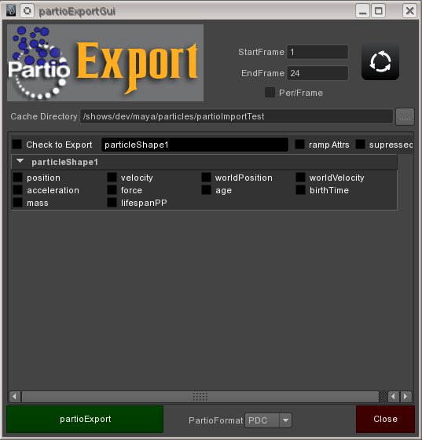

%mel: partioExport -h
-----------------------------------------------------------------------------
partioExport [Options] node
[Options]
-mnf/minFrame <int>
-mxf/maxFrame <int>
-f/format <string> (format is one of: pda,pdb,pdc,prt,bin,bgeo,geo,ptc,mc,rib,ass)
-atr/attribute (multi use) <PP attribute name>
(position/velocity/id) are always exported
-p/path <directory file path>
-fp/filePrefix <fileNamePrefix>
-flp/flip (flip y->z axis to go to Z up packages)
Example:
%mel: partioExport -mnf 1 -mxf 10 -f prt -atr position -atr rgbPP -at opacityPP -fp "SmokeShapepart1of20" -p "/file/path/to/output/directory" particleShape1;